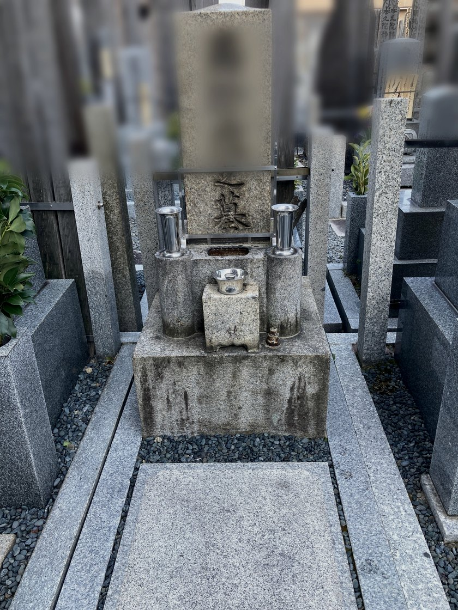

SERVICE 01
洗
墓石クリーニングBOSEKI CLEANING
石の種類を見極め、水垢・苔・黒ずみを汚れに応じた専用薬剤で除去。 石材本来の色合いと文字の刻みを蘇らせます。
一般墓 ¥22,000〜／基
ビフォーアフターを見る →
京都・北大阪・滋賀で墓石クリーニング・お墓参り代行を承ります。（※対応エリア詳細は下記）
石の種類を見極め、汚れに応じた専用の薬剤と手順で、ご先祖様のお墓を静かに磨き上げます。

長い年月のうちに石肌はくすみ、苔や水垢がご先祖様の御名を覆っていきます。
「きれいにして差し上げたい」――そのお気持ちに、確かな技術でお応えいたします。
作業の前にはご先祖様に合掌し、完了後にはお写真でご報告を。
京都より、心を込めた一手間を。
― みやこ磨き ―
京都市全域・京都府南部・北摂（高槻～豊中）・北河内（枇方～門真）・滋賀県湖南エリア（大津～野洲）を中心に対応しております。
上記以外の地域もお気軽にご相談ください。
また、関東エリア（東京・神奈川・千葉・埼玉・群馬・栃木）でのご依頼は、提携業者をご紹介させていただきます。
墓石の状態とお客様のご要望に合わせて、
三つのサービスをご用意しております。
石の種類を見極め、水垢・苔・黒ずみを汚れに応じた専用薬剤で除去。 石材本来の色合いと文字の刻みを蘇らせます。
洗浄後に専用の撥水コーティングを施工。汚れの付着を抑制し、 光沢を1〜2年にわたり長くお保ちいただけます。
遠方のご家族に代わり、お花・お線香・簡易清掃をセットで代行。 完了後にLINEまたはメールにて、現地の写真をご報告いたします。
御影石・安山岩・大理石――石種により性質はまったく異なります。 研修で叩き込まれた判断基準で石を見極め、最適な洗浄方法を選定。 「善意で大切なお墓を傷つけない」ことを何より大切にしております。
コケにはコケ用、水垢には水垢用――汚れの種類に応じた専用薬剤と 手順を使い分けます。一つでも誤れば石の寿命に影響する。 だからこそ、仕上がりだけでなく、石本来の力を損なわない施工を。
作業の前にはご先祖様に合掌し、完了後には写真で品質を確認。 一連の所作すべてに意味がある――研修で学んだこの姿勢を、 一基一基のお墓に向き合うたびに大切にしております。
お問い合わせから施工完了まで、
六つのステップで丁寧にご案内いたします。
まずはお墓のある霊園事務所・菩提寺様へ「外部のクリーニング業者に依頼しても差し支えないか」「指定業者の定めはないか」をご確認ください。寺社によっては指定業者制を取られている場合があり、事前確認がトラブル防止の第一歩となります。
LINE公式アカウントより、簡易見積もりアプリをご利用いただけます。お墓の寸法・石種・状態をご入力いただくと、目安の金額が画面上でご確認いただけます。お気軽にお試しください。
ご発注の意思がございましたら、お墓のお写真をLINEにてお送りください。汚れの状態・石種を確認のうえ、正式なお見積もりを無料でご提示いたします。ご納得いただいた上でのご契約となります。
墓石クリーニングは天候に大きく左右される作業です。雨天順延の可能性を含め、概ね二週間ほどの幅を持たせてご予約日程を調整させていただきます。仕上がりの品質を守るため、どうかご理解いただけますと幸いです。
ご注文が確定しましたら、お支払い方法をご案内いたします。銀行振込・PayPay・クレジットカードにてお受けしております。ご都合のよい方法をお選びください。
作業前にはご先祖様に合掌し、石種に合わせた薬剤で丁寧に施工いたします。完了後はビフォーアフターのお写真をLINEにてご報告。ご遠方の方にも、仕上がりをその場でご確認いただけます。
― お墓が教えてくれたこと ―
20代の頃、私は会計事務所に就職しました。しかし、過酷な労働環境と様々な事情が重なり、2年と持たずに退職。社会人として一人前にやり遂げたという実感もないまま、再び就職活動に向き合うことになりました。
いわゆる就職氷河期の真っ只中です。周囲を見渡しても、職場で心身をすり減らしている先輩の話が耳に入り、社会に対する漠然とした絶望感がありました。「早く何者かにならなければ」という焦りと、どこにもぶつけようのない悲壮感。あの頃の私は、そんな感情に静かに追い詰められていたように思います。
無職の期間中、私は週に何度もお墓参りに通いました。
曽祖父の代に建てられたという我が家のお墓は、周囲と比べると少し小さく、長い年月のせいか石肌はくすみ、正直に言えばパッとしない佇まいでした。誰が見ても立派だと感じるようなお墓ではなかったと思います。
それでも、手を合わせることを繰り返すうちに、不思議と心のざわつきが静まっていくのを感じました。焦燥感や悲壮感といった負の感情が、少しずつ薄らいでいくのです。ご先祖様に向き合い、敬い、大切にするという行いそのものが、知らず知らずのうちに自分の心を支えてくれていたのかもしれません。
その後、ご縁があって就職した職場では15年のキャリアを積むことができました。幅広い実務を経験し、それが確かな土台となって、その後の転職でも20代の頃のような苦しさに苛まれることはなくなりました。
ある日、墓石クリーニングサービスの広告が目に留まりました。今思えば不思議なのですが、「利用したい」ではなく「自分でできるようになりたい」と感じたのです。気がつけば夢中で情報を調べ、研修に申し込んでいました。
研修で最初に学んだのは、「石の種類を見極めること」でした。墓石には御影石、安山岩、大理石など様々な石種があり、それぞれ性質がまったく異なります。たとえば、御影石に使える洗浄剤でも、大理石に使えば表面が溶けてしまうことがあります。酸性の洗剤を安易に使えば取り返しのつかない変色を起こすこともあります。「きれいにしたい」という善意が、知識なく行えばかえって大切なお墓を傷つけてしまう――その怖さを、研修の初日に叩き込まれました。
コケにはコケ用、水垢には水垢用と、汚れの種類に応じた専用の薬剤と手順があります。その選択を一つでも誤れば、仕上がりだけでなく石そのものの寿命にも影響が出ます。作業の前にはご先祖様に合掌し、完了後には写真で品質を確認する――研修では、そうした一連の所作すべてに意味があることを学びました。
研修を経て、実際に我が家のお墓をクリーニングしてみると――驚きました。あのくすんでいた石肌から、数十年分の汚れが落ち、本来の白さが蘇ったのです。見慣れていたからこそ気づけなかった汚れ。周囲のお墓と比べて感じていた見劣りも、嘘のようになくなっていました。慣れとは怖いものですね。
物理的に汚れを落としたのですから、明るくなるのは当然のことです。でも、それ以上に胸に広がったのは、「ご先祖様をきれいにして差し上げられた」という、静かな誇らしさでした。あの無職の日々に何度も手を合わせたお墓が、今度は自分の手で生まれ変わった。そのことが、理屈を超えて、深く心に響いたのでしょうね。
それ以来、実家のお墓は定期的に自分の手でクリーニングを続けています。季節ごとに汚れの付き方は変わりますし、手を動かすたびに新しい気づきがあります。また、研修先にもお手伝いに伺い、様々な石種や状態のお墓に触れる機会をいただいています。現場の数だけ学びがある。この仕事は、一度覚えて終わりではなく、経験を重ねるほどに技術と判断力が磨かれていくものだと実感しています。
お見積もりは無料です。お墓の写真をお送りいただければ、
より正確な施工プランをご提案いたします。
「ちょっと相談してみたい」だけでも、お気軽にどうぞ。
受付時間 9:00 - 18:00 ／ 土日祝もご相談可
📞 お電話：075-600-0175（AI自動応答）